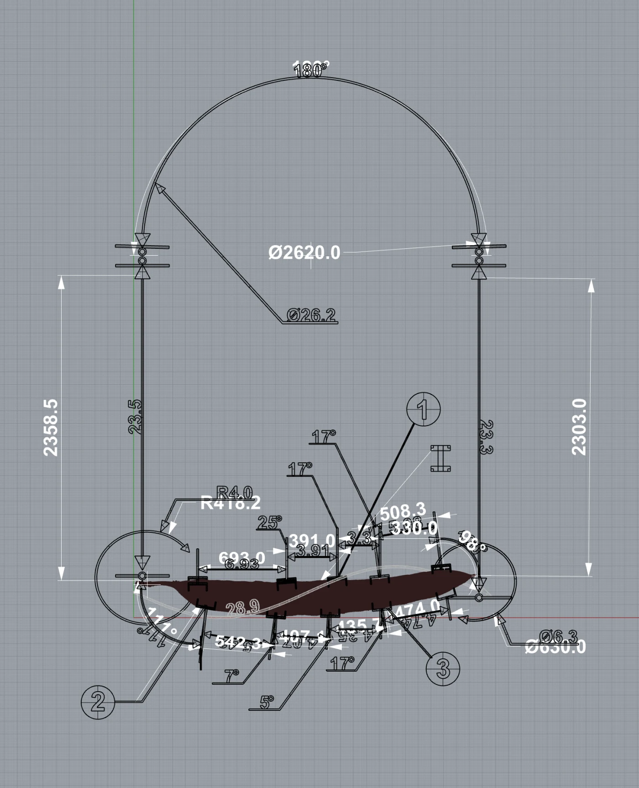
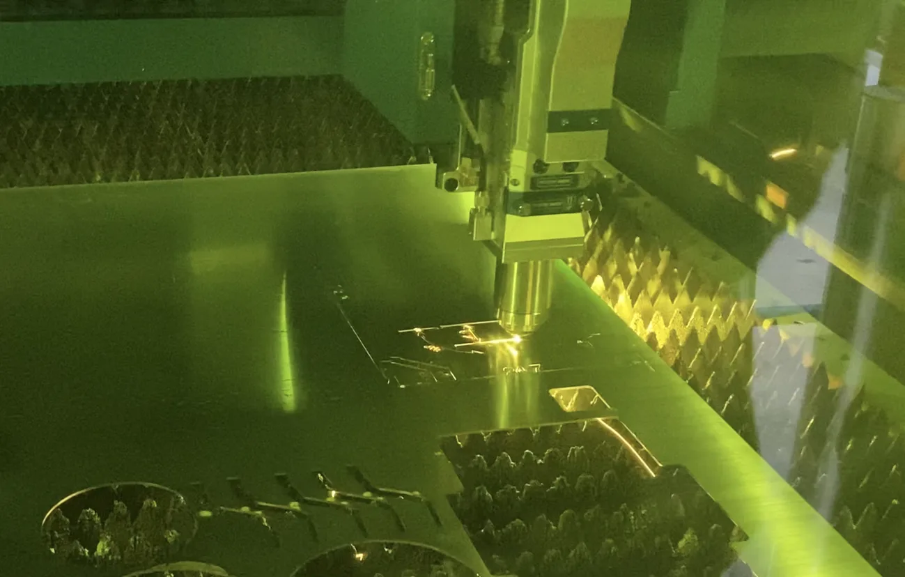
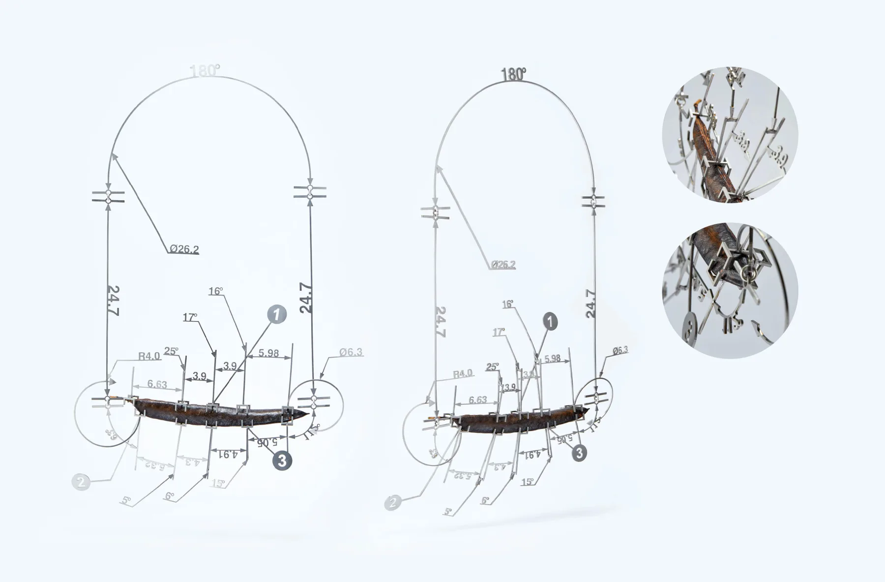
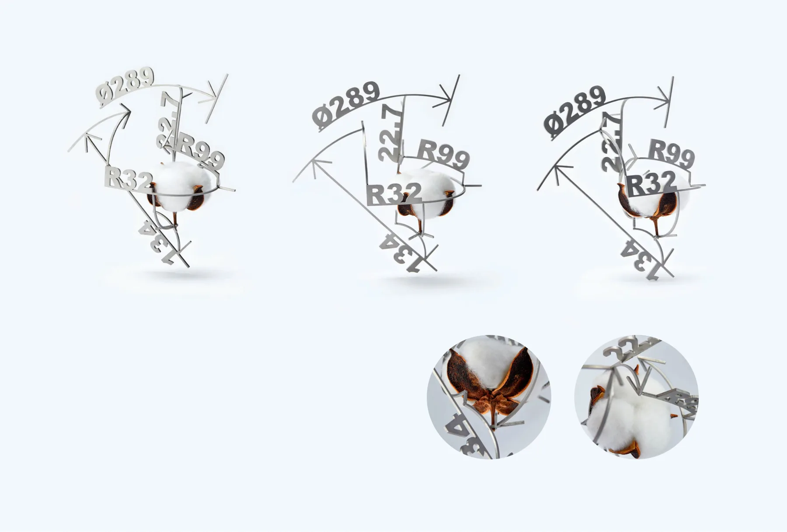
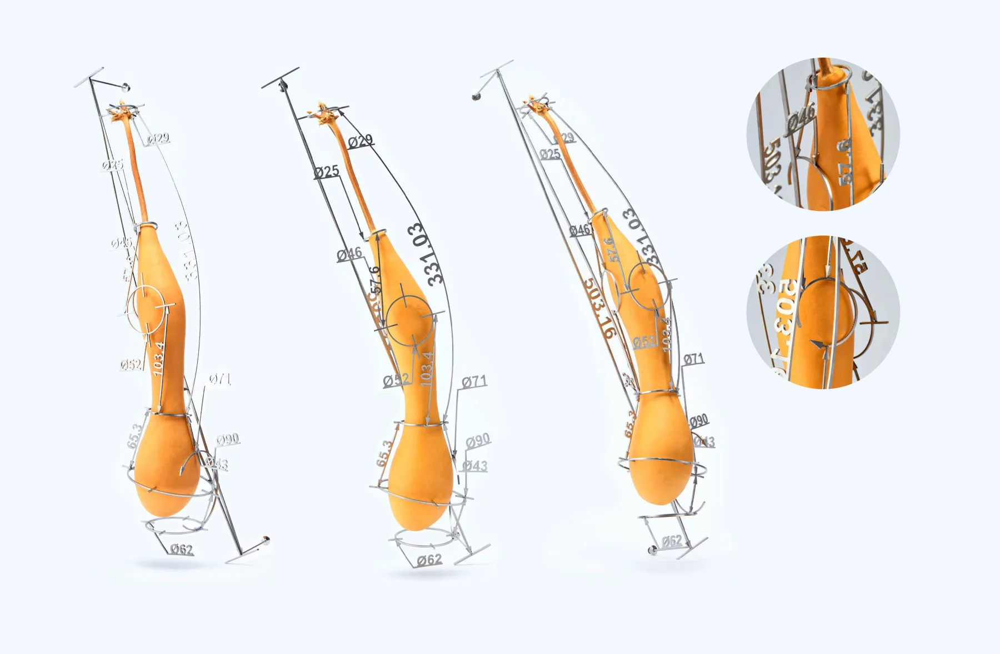
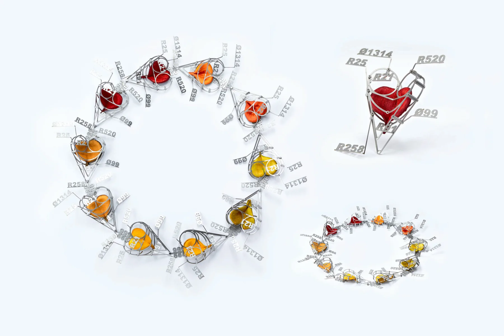

Project file / measurement system
04
Gewu / Investigation
Engineering drawing and measurement systems are transformed into physical jewelry frames, questioning whether measurement is neutral or subjective.






01-05
Measurement sequence
-
01
Overview
Gewu / Investigation converts abstract measurement signs into wearable and object-based structures. Drawing symbols, scales, and frames become physical settings that hold fragile organic materials. The work asks whether measurement is simply a rational tool, or whether it also produces its own material, symbolic, and subjective distortions.
-
02
Drawing to object
The project begins from drafting and engineering notation. Signs from the drawing field are cut, welded, and assembled into stainless steel structures.
-
03
Measurement frame
The frame functions as both support and measuring device. It gives the object a rational outline while making the act of measuring visible.
-
04
Organic material
Dried fruit is inserted into the stainless steel frames. Its shrinking and changing surface interrupts the stability promised by the metal structure.
-
05
Precision and incompleteness
The supposedly precise system encounters unstable matter. Measurement becomes an incomplete relation between sign, body, and material change.